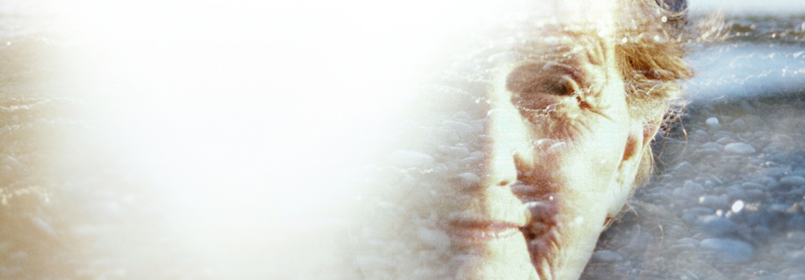

IN THE WAVES (2017) with Jacquelyn Mills at AMS Hall
Note: this event will be held at Annie May Swift Hall at Northwestern University.
Screening starts at 7:00 PM.
IN THE WAVES (Jacquelyn Mills, 2017, 60 min, DCP)
Jacquelyn Mills’ debut feature IN THE WAVES (2017) announced the arrival of an exceptional new voice in experimental nonfiction cinema, one as adept at tracing the contours of the Canadian landscape as of her subjects’ inner lives. This long-gestating “intergenerational love-letter” offers a portrait of Mills’ grandmother Joan in her Cape Breton home, where the Nova Scotia island’s landscape offers a space of solace during a period of grief and loss, as well as a mirror reflecting the inevitability of change and transformation. Mills brings us into the world of her family and her hometown through exceptionally adept cinematography and sound editing, gently bobbing between the quotidian and the wondrous, the intimate and the expansive.
Following this screening of IN THE WAVES, held at Northwestern’s Annie May Swift Hall, director Jacquelyn Mills will appear for an in-person discussion and audience Q&A.
Presented by the MFA in Documentary Media, the Hoffman Visiting Artist Fund for Documentary, and the Screen Cultures Program at Northwestern University.